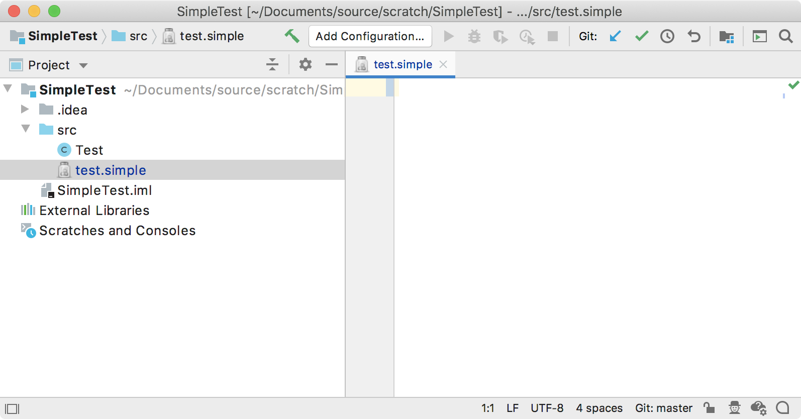

2. Language and File Type
The IntelliJ Platform determines file type by examining the name of a file.
Each language has Language and LanguageFileType objects defining the language.
Register the LanguageFileType with the IntelliJ Platform in the plugin configuration file.
- 2.1. Define the Language
- 2.2. Define an Icon
- 2.3. Define a FileType
- 2.4. Register the FileType Directly
- 2.5. Register the FileType Using a Factory
- 2.6. Run the Project
2.1. Define the Language
The language implemented in this tutorial is named “Simple” - note the case of the name.
The SimpleLanguage class is defined in the org.intellij.sdk.language package of the simple_language_plugin code sample:
// Copyright 2000-2020 JetBrains s.r.o. and other contributors. Use of this source code is governed by the Apache 2.0 license that can be found in the LICENSE file.
package org.intellij.sdk.language;
import com.intellij.lang.Language;
public class SimpleLanguage extends Language {
public static final SimpleLanguage INSTANCE = new SimpleLanguage();
private SimpleLanguage() {
super("Simple");
}
}
2.2. Define an Icon
The icon for the Simple Language is defined by the SimpleIcons class.
There is nothing uniquely Simple Language-specific about defining the icon itself.
The definition follows a pattern similar to defining, e.g., SdkIcons.
// Copyright 2000-2020 JetBrains s.r.o. and other contributors. Use of this source code is governed by the Apache 2.0 license that can be found in the LICENSE file.
package org.intellij.sdk.language;
import com.intellij.openapi.util.IconLoader;
import javax.swing.*;
public class SimpleIcons {
public static final Icon FILE = IconLoader.getIcon("/icons/jar-gray.png");
}
2.3. Define a FileType
The Simple Language file type is defined by subclassing LanguageFileType:
// Copyright 2000-2020 JetBrains s.r.o. and other contributors. Use of this source code is governed by the Apache 2.0 license that can be found in the LICENSE file.
package org.intellij.sdk.language;
import com.intellij.openapi.fileTypes.LanguageFileType;
import org.jetbrains.annotations.NotNull;
import org.jetbrains.annotations.Nullable;
import javax.swing.*;
public class SimpleFileType extends LanguageFileType {
public static final SimpleFileType INSTANCE = new SimpleFileType();
private SimpleFileType() {
super(SimpleLanguage.INSTANCE);
}
@NotNull
@Override
public String getName() {
return "Simple file";
}
@NotNull
@Override
public String getDescription() {
return "Simple language file";
}
@NotNull
@Override
public String getDefaultExtension() {
return "simple";
}
@Nullable
@Override
public Icon getIcon() {
return SimpleIcons.FILE;
}
}
2.4. Register the FileType Directly
Direct registration is necessary when targeting version 2019.2 (and later) of the IntelliJ Platform.
No FileTypeFactory is required.
Instead, the file type is registered of file type is done via the com.intellij.fileType extension point in plugin.xml:
<extensions defaultExtensionNs="com.intellij">
<fileType name="Simple file" implementationClass="org.intellij.sdk.language.SimpleFileType"
fieldName="INSTANCE" language="Simple" extensions="simple"/>
</extensions>
Skip to section 2.6.
2.5. Register the FileType Using a Factory
This pattern is necessary when targeting versions of the IntelliJ Platform prior to 2019.2
2.5.1 Define a FileType Factory
First, define SimpleFileTypeFactory as a subclass of FileTypeFactory.
// Copyright 2000-2020 JetBrains s.r.o. and other contributors. Use of this source code is governed by the Apache 2.0 license that can be found in the LICENSE file.
package org.intellij.sdk.language;
import com.intellij.openapi.fileTypes.FileTypeConsumer;
import com.intellij.openapi.fileTypes.FileTypeFactory;
import org.jetbrains.annotations.NotNull;
/**
* Note: This class is only used with the fileTypeFactory extension point
* for versions of the IntelliJ Platform prior to v2019.2
*/
public class SimpleFileTypeFactory extends FileTypeFactory {
@Override
public void createFileTypes(@NotNull FileTypeConsumer fileTypeConsumer) {
fileTypeConsumer.consume(SimpleFileType.INSTANCE);
}
}
2.5.2 Register the FileType Factory
The SimpleFileTypeFactory is registered with the IntelliJ Platform using the com.intellij.openapi.fileTypes.FileTypeFactory extension point in plugin.xml.
<extensions defaultExtensionNs="com.intellij">
<fileTypeFactory implementation="org.intellij.sdk.language.SimpleFileTypeFactory"/>
</extensions>
2.6. Run the Project
Create an empty file with the extension *.simple, and IntelliJ IDEA automatically associates it with our language.
Note the appearance of the Simple Language file icon next to the test.simple file in the Project Tool Window, and the editor tab for the file.
